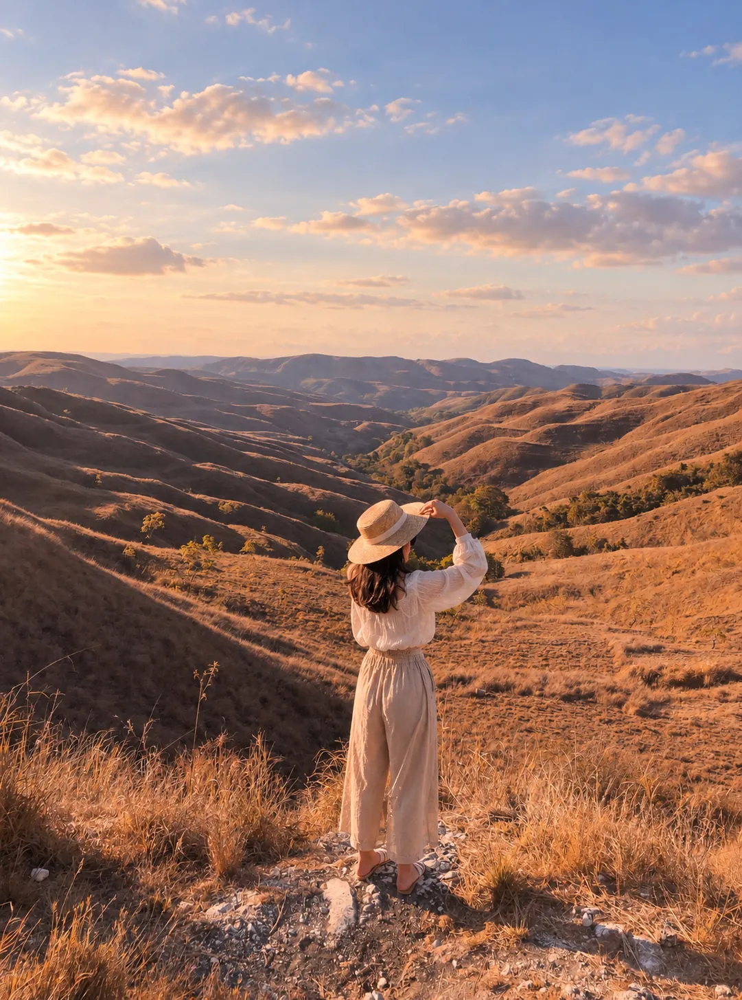
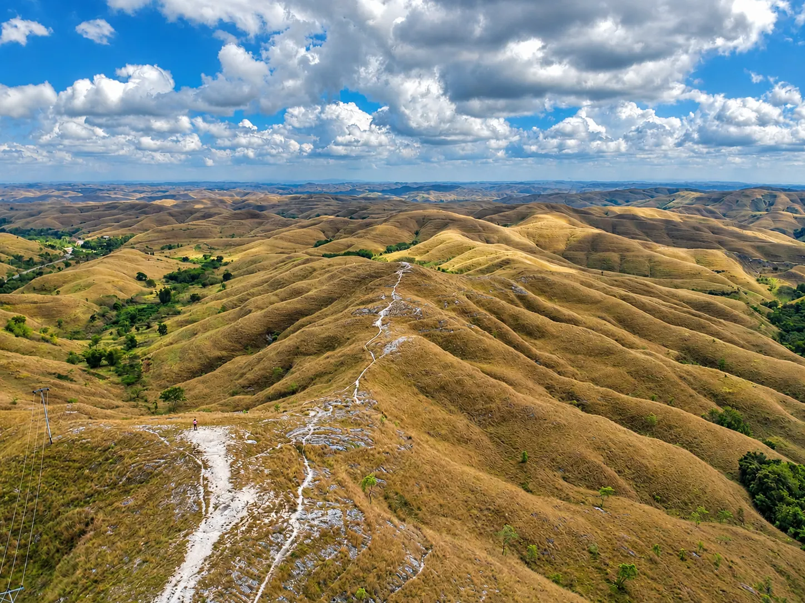

Avant de partir
Carte SIM, argent, santé, connexion — tout ce qu'il faut préparer avant d'arriver à Sumba.
Vol intérieur depuis Bali (Denpasar) vers Tambolaka (~50 min) ou Waingapu (un peu plus long), via Nam Air ou Wings Air. Aucun vol direct depuis l'international — comptez une escale à Bali dans tous les cas. Comptez autour de 110-120€ par personne pour un aller-retour Bali-Sumba. La desserte reste limitée : certaines liaisons ne comptent plus qu'un seul vol par jour, contre plusieurs avant 2020 — mieux vaut prévoir une nuit tampon à Bali avant toute correspondance internationale serrée, et éviter d'organiser un vol retour trop juste. Si votre itinéraire traverse l'île d'est en ouest (ou l'inverse), il est possible d'arriver par un aéroport et de repartir par l'autre — évitez de retraverser l'île juste pour reprendre votre vol de départ initial.
Une alternative existe pour prolonger votre voyage vers l'île de Flores : un ferry public relie Waikelo (Ouest de Sumba) à Aimere ou Ende, sur Flores. Les horaires sont irréguliers et la réservation en ligne n'est généralement pas possible — les billets s'achètent sur place, le jour même. Une option à envisager pour les voyageurs qui prolongent leur périple plutôt que comme mode d'accès principal à Sumba.
Depuis octobre 2025, une déclaration d'arrivée "All Indonesia" est obligatoire pour tous les voyageurs internationaux, à remplir dans les 3 jours précédant l'arrivée sur allindonesia.imigrasi.go.id (site officiel, gratuit — méfiez-vous des sites tiers payants). Elle génère un QR code à présenter à l'immigration et à la douane, et remplace les anciennes déclarations séparées. Attention : cette déclaration ne remplace pas le visa — il reste nécessaire d'obtenir un visa ou un e-VOA en plus.
Google Maps ne connaît pas toutes les routes et pistes de Sumba — l'application Maps.me, qui fonctionne hors ligne et couvre mieux les petites routes, est une bonne alternative à télécharger avant de partir.
Telkomsel offre la meilleure couverture sur l'île — procurez-vous-en une à Bali avant de vous envoler, elle sera plus difficile à trouver sur place. Une eSIM activée dès l'atterrissage à Bali est aussi une bonne option, à installer avant le départ pour être connecté dès l'arrivée. Le wifi reste quasi inexistant en dehors des grands hôtels, avec des coupures fréquentes même là où il existe : prévoyez votre propre connexion mobile pour rester joignable, et gardez en tête qu'une couverture stable n'est pas garantie même à Tambolaka.
Les distributeurs (ATM) se trouvent surtout à Tambolaka, Waikabubak et Waingapu, et plafonnent souvent le retrait à 1-2 millions IDR. L'espèce reste le seul moyen de paiement dans la plupart des commerces, notamment pour les entrées de villages et les guides locaux — prévoyez toujours du liquide sur vous. Un premier supermarché Indomaret a ouvert fin 2025 pour les besoins de base.
Vivement recommandée avant de partir — les infrastructures médicales restent basiques en dehors des grandes villes de l'île. En cas de pépin sérieux, une évacuation vers Bali peut être nécessaire.
Outre les vaccins universels à jour, l'hépatite A et B ainsi que la typhoïde sont conseillées. Un traitement antipaludique est généralement recommandé pour les zones rurales de l'île. Demandez conseil à un médecin ou un centre de vaccination international avant de partir — idéalement plusieurs semaines à l'avance.
La cuisine locale reste assez répétitive (riz, nouilles, poulet, poisson) et les options occidentales sont rares en dehors des grands hôtels. Si vous avez une allergie ou un régime particulier, une carte de traduction en indonésien peut grandement faciliter la communication avec le personnel — même dans certains hôtels, les ingrédients exacts ne sont pas toujours clairs pour l'équipe. À goûter si l'occasion se présente : le martabak, une spécialité de la communauté musulmane de l'île — une pâte feuilletée frite garnie de viande, légumes et œuf.
Des toilettes existent sur la plupart des plages et cascades les plus fréquentées, mais leur propreté et leur éclairage restent inégaux — ne vous attendez pas à un confort occidental. En revanche, il n'y en a généralement pas dans les villages traditionnels : prévoyez un arrêt avant d'y arriver si le trajet est long.
Sumba se prête bien aux enfants à partir de 8 ans environ. En dessous, certaines marches jusqu'aux cascades et certains passages (ponts, troncs glissants) demandent une vigilance accrue, en particulier en saison des pluies. Ce n'est en revanche pas une destination adaptée aux personnes à mobilité réduite, compte tenu de l'état des routes et de l'absence d'aménagements.

Une question ?
Un doute sur la préparation de votre séjour ? Écrivez-nous, on vous répond en général sous 24h.